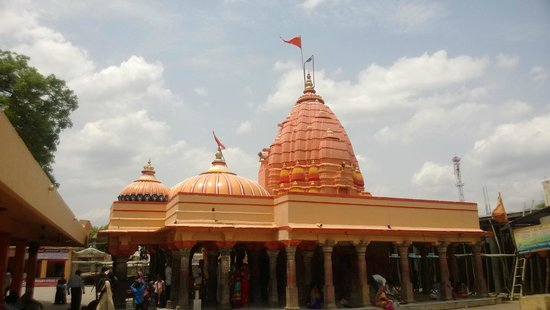

यह एक प्राचीन मंदिर है। इस परमारकालीन मंदिर का जीर्णोद्धार महारानी अहिल्याबाई ने करवाया था।
यहां पर श्री चिंतामणि गणेश के साथ ही इच्छापूर्ण और चिंताहरण गणेशजी की प्रतिमाएं हैं।

ऐसी मान्यता है कि इस मंदिर में ली गई मनौतियां अवश्य ही पूर्ण होती हैं।
यहां पर दूर-दूर से लोग दर्शन करने आते हैं।
यह मंदिर नगर से लगभग 7 किलोमीटर दूरी पर स्थित है।